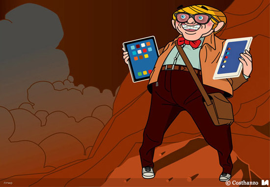
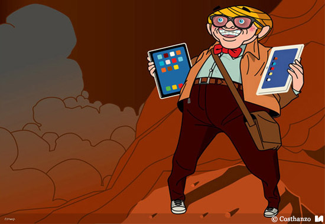

E-commerce vehicular
Html5 / Css3 / JavaScript / Vue.js / MySQL
Fecha: fechaDjango
Puedes Verlo: AQUI
Repositorio AQUI
El proyecto cuenta con todas las categorias y funcionalidades para hacer consultas directamente con el vendedor a traves de usuarios hechos en Django. Un repositorio de imagenes que se actualiza a medida que se agregan imagenes en el administrador, un contacto con su formulario y el registro para distintos usuarios y administradores.


 
